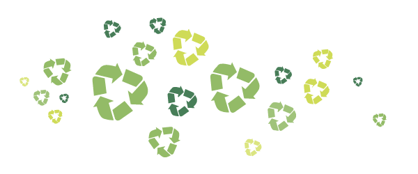

It's easy being green: Idling computers and bottled water, when used wisely, can make minimal impacts on the Earth.
"Focus on reducing your energy and water consumption and your waste generation, and you'll be on your way to reducing your footprint on the planet," says Malten.
1. Use fluorescent light bulbs. Yes, they're more expensive than incandescent light bulbs ($2 vs. $.50), but switch out your incandescent bulb for compact fluorescent bulbs (CFLs) in your house, and you could save up to 30 percent on your energy bill.
"According to the U.S. Environmental Protection Agency's ENERGY STAR program, CFLs use about 75 percent less energy than incandescents and last 10 times longer," says Malten. "This, on average, results in $30 savings for the life of the bulb."
2. Keep your car in excellent condition. Of course, it's best to walk, bicycle, carpool or use mass transit for your daily commuting, but for those who must use their own vehicles, improving even the most inefficient of cars' fuel mileage is as easy as keeping your tires properly inflated and changing your oil and air filters regularly. And follow those traffic laws — your car burns less fuel when you drive slowly and obey the speed limit on highways.
3. Make sure your dishwasher and clothes washer and dryer are full before using them. The aforementioned major appliances consume large amounts of energy, so reduce their use as much as possible by only running them with full loads.
If you're in the market for new appliances or other electronics, look for the ENERGY STAR label to purchase the most energy efficient models available. "These appliances have been certified by a rigorous third-party review," says Malten. "In addition to saving energy and water consumption, they also will save consumers money."
4. Wash clothes in cold water and line dry. Using cold water rather than hot in the washer saves electricity and works just as well as hot with most clothes. Line drying not only is more environmentally friendly, but it also will keep clothes from shrinking and fading.
5. Shut down and unplug idle electronics. Your computer might be asleep, but if there's a light on, it's still using energy. Turn off and unplug your computer, printer, television, radio — any electronic device that you're not using.
6. Skip the bottled water. Sure, water is good for you, but the process of harvesting the raw materials, processing and manufacturing the petroleum-based plastic water bottles and shipping them to market is extremely energy intensive. So filter your own water and fill up your own reusable bottles for water on-the-go.
7. Supply your own bags and leftover containers. If you're headed to a restaurant that you know serves king-sized portions, bring a small piece of Tupperware along to take home the leftovers, and keep one fewer Styrofoam container from the landfill pile. Going to the supermarket? Opt out of the paper/plastic debate and bring your own canvas tote bags.
"Although many supermarkets recycle used plastic bags, the process still requires much energy to be used to transport and process the materials," says Malten. "Not only are reusable bags more sustainable, they are also becoming more of the norm, especially as more municipalities around the country are adopting zero-waste goals and banning the use of plastic bags."
8. Buy items with less packaging, and with packaging that your community recycles. It's convenient to buy snack crackers already divided into even, individual portions in plastic bags, but that creates much more waste packaging than just buying the full box.
"The old adage of reduce, reuse, recycle remains apropos," says Malten. "We must remind ourselves that the first step is always to reduce our demand of natural resources."
9. Support local farmers. Food grown or produced halfway around the world didn't just appear in the supermarket — it was shipped by plane, boat, truck or rail, and no matter which method of transportation it took, greenhouse gases were emitted along the way. Pick the apple grown in your state instead of the banana grown in another country.
10. Plant a tree in your backyard. It seems simple, but just one tree can offset tons of carbon over its lifetime. If planted appropriately, it also will provide shade on a sunny day, perhaps reducing the use of energy for air-conditioning in buildings and homes.
"While reducing energy will cut our carbon emissions, it also is important to restore more natural 'sinks' that capture carbon," Malten says. "Planting trees and perennials are an easy place to start."
11. Try used products first. Need a couch? Check newspaper classifieds or craigslist.com to see if you can find an acceptable used option before going to a showroom to buy a new one, which will have required both energy and materials to make and ship.
12. Ask about green power. Many utility companies offer renewable energy options, which is power generated by wind or solar energy.


Three Steps to Efficient Windows

Herb Gardening for the Health of It

Become an Environmental Superhero